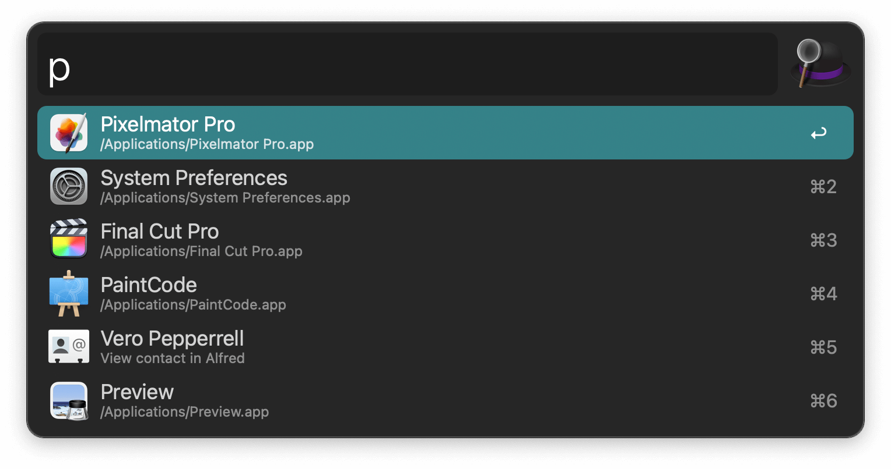
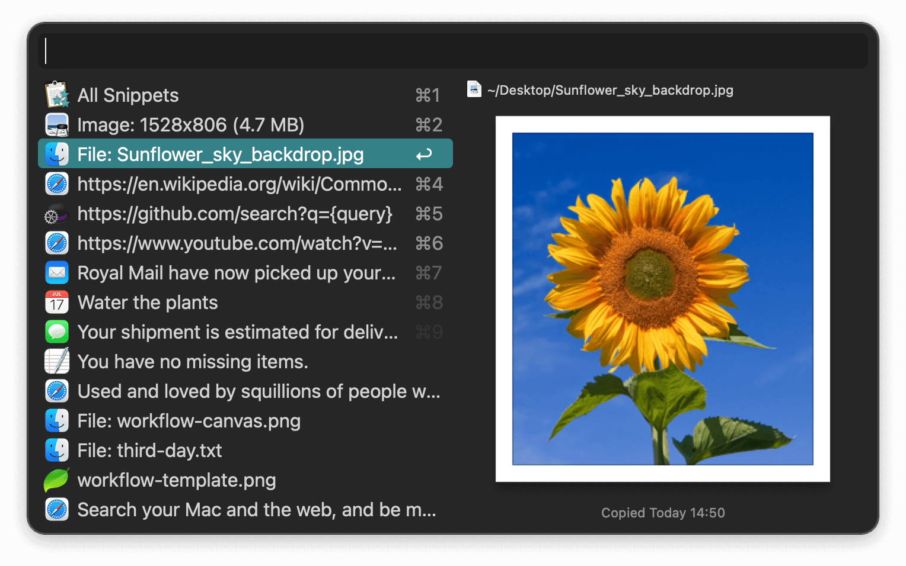
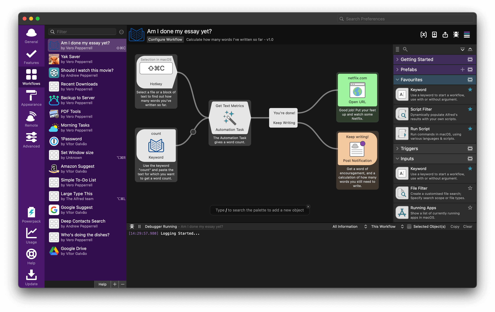
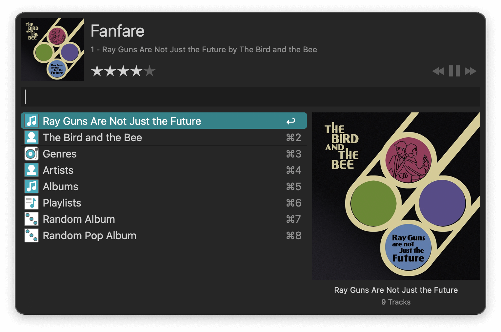

Discover a whole new way to interact with Alfred, using beautiful rich and interactive views.

Launch applications and find files on your Mac or on the web. Alfred learns how you use your Mac and prioritises results.
Save countless hours by using hotkeys, keywords and customising how you want to search your Mac and activity history.
Jump in and browse, preview files and take action on them without lifting your fingers off the keyboard.

With Alfred's Clipboard History and Snippets features, there's no need to type the same URLs or responses over and over.
Use the Clipboard History to locate any text, image or file you copied earlier and paste it again.
Create your own snippets and type a short abbreviation to auto-expand them into a full text snippet, saving yourself hours of typing in the long run!

With Alfred's Powerpack, use immensely powerful workflows to perform tasks more efficiently and cut down on repetitive manual tasks.
Link hotkeys, keywords and actions together to create your own workflows; There's no need to write a single line of code to create a workflow. Import workflows from the thousands our community of creators have shared.

You're the boss. Boost your productivity by controlling your Mac using Alfred's deep integration with macOS. Swiftly take action on files and contacts, control your music player and dispatch System commands.
Add some fun to your day; Turn your iPhone or iPad into a command centre for your Mac with Alfred Remote for iOS.
Alternatively, take a look at the many workflows for other music services like Spotify.
Launch apps and find files without lifting your fingers from the keyboard.
Search your favourite websites with default and custom search keywords.
Perform quick maths calculations and copy the result to your clipboard.
Check your spelling or swiftly find the definition of a new word.
Sleep your Mac, empty Trash, activate your screensaver and more with keywords.
Tap the Shift key to preview the content of a file without opening it.
Pop up a phone number or any text in large text on your screen.
See just how addicted to Alfred you are with your own usage stats graph.
Search and paste past copied text clips, images, file paths and colour hex codes.
Save frequently used text clips as snippets, and auto-expand them anywhere.
Create or import immensely powerful workflows to boost your productivity.
Keep your hands on the keyboard and launch apps and files using hotkeys.
Navigate your file directory and perform actions on results.
Search your music collection, browse genres or play random albums in Music.app.
Locate recently used files and documents for your favourite apps.
Customise Alfred's colours, fonts, sizes and more. Share your themes with friends.
Find files with Alfred and attach them to a new email to a contact in a snap.
Get secure and fast access to websites with 1Password's bookmarks integration.
Use the default fallback searches or customise them for more efficient search.
Keep your Alfred settings in sync across your Macs.
Search for files and add them to your buffer to take action on all of them at once.
Quickly open Terminal and run Shell commands from Alfred's command box.
Search your local Contacts and copy or take action on their details.
Comprehensive guides to get you started with workflows and new features.
Feature requires the Alfred Powerpack.
The core of Alfred is free for you to download and use forever, with no strings attached. Alfred is the ultimate productivity tool for your Mac. Get it and see for yourself.
Get loads of app-launching, file-searching goodness for free, and boost your productivity!
Download Alfred 5 for FreeControl your Mac with the Powerpack's incredible features, and enjoy workflows and themes.
Buy the PowerpackTurn your iPhone or iPad into your personal command centre for Alfred for Mac.
Buy Alfred RemoteVersion 5.7.3 b2320 (macOS 10.14+, 64-bit Intel, Apple Silicon).
Alfred 5 for Mac is Developer ID Signed and Notarised.
Read the Terms & Conditions
Looking for Alfred 4?